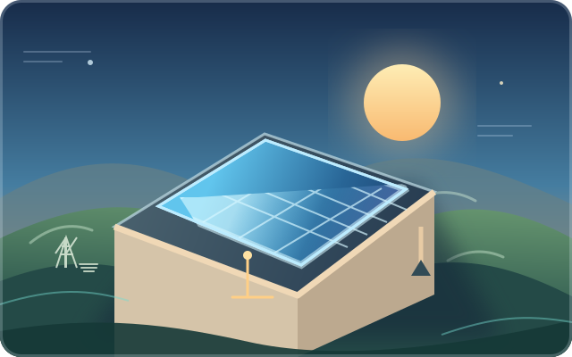
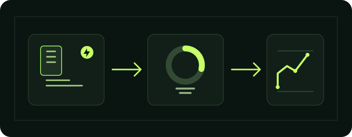
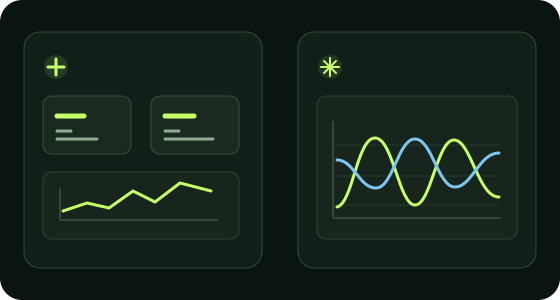

CONSUM AZI
8,42kWh
calculat din aparate
Conectează-te pentru a accesa spațiul tău energetic.
Autentificarea prin email, Google, Facebook și guest este gestionată de Firebase Authentication. Datele calculatorului VoltConsum rămân locale în acest browser.
Iată cum arată energia ta astăzi.
Istoricul și perioada anterioară sunt demonstrative; valoarea de azi este calculată din aparatele introduse.
Estimarea producției solare apare după încărcarea prognozei.
Sursă: Open-Meteo · Factor de performanță estimativ 80%; orientarea, umbrirea și înclinarea pot schimba producția reală.
Estimare orientativă: traseu de 20 m într-un sens, cupru la 20 °C, 230 V monofazat și toate puterile introduse simultan. Secțiunea urmărește doar o cădere de tensiune de cel mult 3%; nu verifică încălzirea conductorului, protecțiile sau metoda de montaj. Confirmă dimensionarea cu un electrician autorizat.

Estimarea presupune că 76% din producție este autoconsumată; venitul din energia livrată în rețea nu este inclus.
| ECHIPAMENT | PUTERE | ORE/ZI | kWh/ZI |
|---|
Tariful de 3,50 MDL/kWh este doar un exemplu. Introdu prețul final aplicat din factura furnizorului tău din Moldova. Modificările se calculează automat și se păstrează pe acest dispozitiv când stocarea browserului este disponibilă.
Rolul tabelelor și indicatorilor din VoltConsum, împreună cu formulele folosite.
| Tabel / indicator | Rol | Formula / metodă |
|---|---|---|
| Tabelul aparatelor | Puterea (W) și orele de utilizare pe zi sunt datele introduse pentru fiecare echipament; coloana kWh/zi arată energia estimată a acestuia. | kWh/zi = putere (W) × ore/zi ÷ 1.000 |
| Rezumatul consumului | Adună consumul zilnic al aparatelor, estimează o lună de 30 de zile și calculează costul la tariful introdus. | kWh/zi = suma aparatelorkWh/lună = kWh/zi × 30MDL/lună = kWh/lună × tarif (MDL/kWh) |
| Distribuția pe aparate | Diagrama și lista arată ponderea consumului zilnic estimat pentru fiecare aparat. | pondere = kWh/zi aparat ÷ total kWh/zi × 100% |
| Graficul consumului | Compară perioadele selectate. Istoricul și comparația sunt demonstrative; doar valoarea ultimei zile provine din aparatele introduse. | total perioadă = suma valorilor zilnice afișate |
| Sistemul fotovoltaic | Estimează producția și economiile folosind puterea sistemului, producția anuală per kWp, autoconsumul și tariful. Nu include venitul din energia injectată în rețea. | kWh/zi = kWp × kWh/kWp/an ÷ 365kWh/lună = kWp × kWh/kWp/an ÷ 12MDL economisiți/lună = kWh/lună × autoconsum (%) ÷ 100 × tarifamortizare (ani) = investiție ÷ economii anuale |
| Prognoza solară | Estimează energia de mâine pe baza puterii sistemului și a randamentului solar din prognoza meteo; rezultatul depinde de condițiile locale. | kWh mâine = kWp × randament prognozat (kWh/kWp) |
| Economia la iluminat | Aplică procentul ales unei baze demonstrative de 990 kWh/an pentru iluminat. | kWh economisiți/an = 990 × reducere (%) ÷ 100MDL/an = kWh economisiți/an × tarif |
| Analiza electrotehnică | Estimează curentul și căderea de tensiune pentru 230 V monofazat, cupru la 20 °C și aparatele considerate simultan în funcțiune. Nu înlocuiește dimensionarea făcută de un electrician. | I = putere totală (W) ÷ (230 × cos φ)ΔU (%) = 2 × L × I × ρ × cos φ ÷ (S × 230) × 100 |
Estimările depind de datele introduse și nu înlocuiesc citirea contorului, factura furnizorului sau verificarea unui specialist.
Ajustează procentul de reducere a consumului pentru iluminat și vezi cât economisești într-un an.
Afișăm profiluri numai după confirmarea lor într-un registru public verificabil.
Informații locale și analize globale, cu surse pentru verificare.
Ghiduri practice despre facturi, economisire, încălzire și investiții verzi, cu estimări în MDL și legături către instrumentele relevante.
Calcule orientative în MDL și legături către instituții și operatori energetici locali.
VoltConsum este un instrument informativ, nu un furnizor și nu o sursă de tarife oficiale. Tarifele, regulile de racordare și condițiile prosumatorilor se pot schimba; verifică informația actuală la ANRE, furnizorul și operatorul de rețea. Prognoza meteo și producția afișate aici sunt demonstrative, nu date în timp real.
VoltConsum te ajută să estimezi consumul locuinței și să explorezi opțiuni de eficiență energetică. Introdu datele tale, verifică ipotezele și folosește rezultatele ca orientare, nu ca măsurătoare oficială.
VoltConsum reunește instrumente pentru estimarea consumului și a costurilor locuinței, analiza unui sistem fotovoltaic, consultarea prognozei meteo și explorarea soluțiilor de eficiență energetică. Include ghiduri, resurse locale și calcule orientative, astfel încât să poți compara scenarii pe baza datelor introduse de tine.
Aplicația VoltConsum a fost creată de .Autor
— Fornea Marius

Pagina principală: indicatorii zilei, rezumatul consumului, graficul și prognoza meteo.
Mergi la început ↗Graficul compară intervale de 7 sau 30 de zile. Istoricul este demonstrativ; consumul de azi vine din aparatele adăugate.
Vezi graficul ↗Configurează puterea, investiția, producția anuală și autoconsumul pentru estimări de economii și amortizare.
Vezi sistemul solar ↗Alege o localitate sau folosește locația dispozitivului pentru prognoză și estimarea producției solare. Poți reîncărca datele meteo.
Vezi prognoza ↗Directorul afișează informații numai când pot fi verificate într-o sursă publică; deschide sursa ANRE pentru detalii.
Vezi sursa ↗Articole și informații despre energie, cu linkuri către sursele originale pentru verificare.
Citește noutățile ↗Ghiduri practice și resurse locale despre facturi, economisire, încălzire și energie regenerabilă.
Deschide ghidurile ↗Explică rolul tabelelor, indicatorilor și formulelor utilizate pentru estimări.
Vezi formulele ↗Mută cursorul pentru a explora o reducere ipotetică. Calculul folosește o bază demonstrativă de 990 kWh/an.
Vezi estimarea ↗Meniu — deschide sau închide navigarea pe ecrane mici.
Creion — modifică aparatul selectat.
X — șterge aparatul selectat.
Plus — adaugă un aparat nou sau o intrare.
Săgeată circulară — actualizează graficul demonstrativ sau reîncarcă prognoza meteo, după locul unde apare.
Săgeată oblică — deschide o secțiune sau o sursă externă; linkurile externe se deschid separat.
Săgeată în jos / JSON — descarcă raportul cu datele și estimările calculatorului.
Soare — panouri fotovoltaice sau schimbarea temei, în funcție de control.
Țintă — alege localitatea ori cere acces la locația dispozitivului pentru prognoză.
Punct colorat — marchează o stare, o serie din grafic sau disponibilitatea prognozei; nu indică o conexiune fizică la contor.
Fulgerul din siglă — simbolizează energia; este element de brand, nu un indicator de stare.
Indicatorul de consum — trimite la energia folosită și la monitorizarea aparatelor.
Autoconsum — partea estimată din energia solară folosită direct în locuință.
Simboluri meteo — ilustrează starea vremii din prognoză: soare, nori, precipitații sau zăpadă.
Linii din grafic — consumul curent și perioada anterioară pentru comparație; datele istorice sunt demonstrative.
Notificări — afișează mesajul dacă nu există notificări noi.
Limba — schimbă limba interfeței între română, rusă și engleză.
Avatarul — identificator vizual al spațiului, nu reprezintă un profil public.
Tema — comută între aspectul întunecat și cel deschis.
Perioada graficului — schimbă intervalul afișat; seria istorică rămâne demonstrativă.
Exportă PDF — deschide dialogul de imprimare al browserului, de unde poți salva pagina ca PDF.
Opțiuni profil — în versiunea actuală este doar un buton informativ, fără meniu suplimentar.
Deconectare — termină sesiunea curentă; simbolul de ieșire de lângă etichetă indică acțiunea.
L / MDL — costurile și economiile sunt exprimate în lei moldovenești.
Comutatorul din bara de sus schimbă vizibilitatea instrumentelor tehnice. Datele și calculele de bază rămân aceleași în ambele moduri.
Arată tabloul de bord și indicatorii de bază. Este potrivit pentru estimarea consumului, costului și economiilor.
Adaugă simularea undelor de tensiune și curent, factorul de putere (cos φ), lungimea cablului, căderea de tensiune și secțiunea orientativă. Aceste valori nu înlocuiesc verificarea unui electrician autorizat.

Important: datele meteo și unele serii din grafice sunt demonstrative sau estimative. Introdu tariful real din factură; nu folosi estimările de cablu drept proiect de instalație. Setările calculatorului se păstrează local în browser când stocarea este disponibilă.
Modifică parametrii pentru estimări orientative. Rezultatele se actualizează automat, iar setările se păstrează pe acest dispozitiv. Introdu oferta primită în MDL și producția potrivită locației tale din Republica Moldova.
Partea de producție folosită direct în locuință. Venitul din energia injectată în rețea nu este inclus.